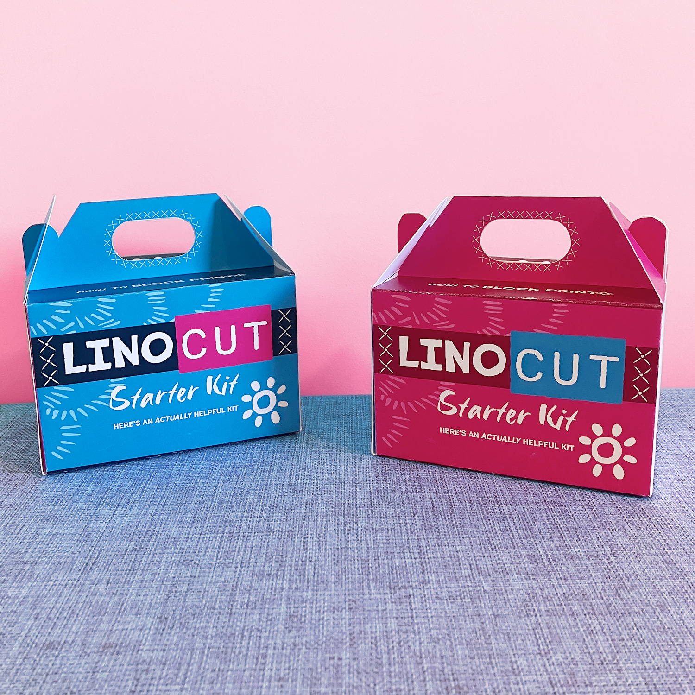
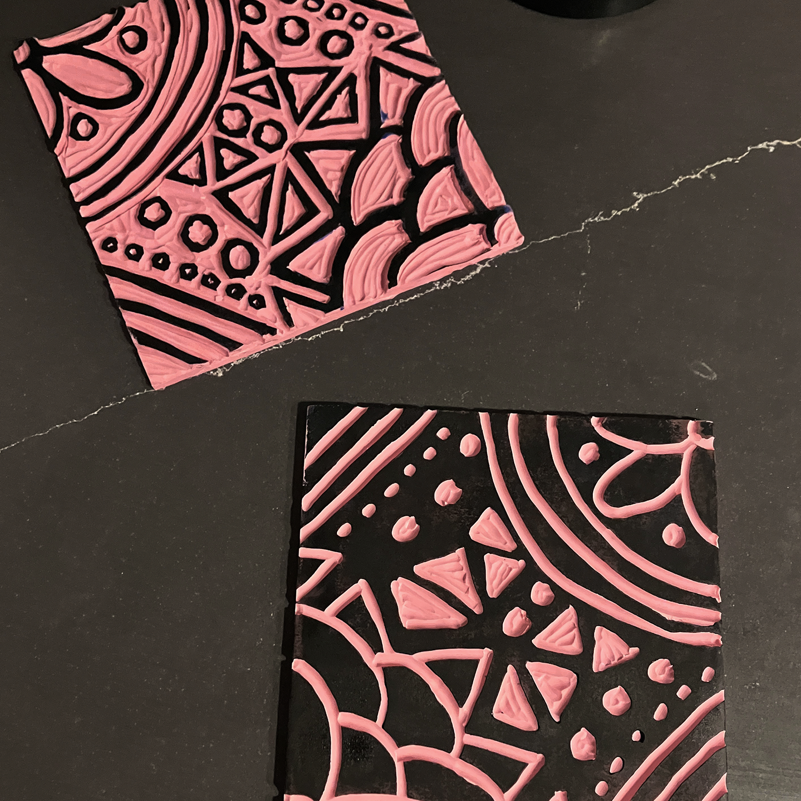

Starter Kits
Actual Guides
Linoleum
Ink
Gouges
Tools



Linocut Printing Quick Starter Kit
Have you ever wanted to learn how to block print but found the kits or manuals were completely unhelpful? Then you're in the right place!
The Linocut Printing Quick Starter Kit is the perfect place for beginners—as well as all skill levels.
Featuring simple tools and a practical guide, this kit will help you in your block printing journey, wherever you're beginning! Because it's Actually useful!
Add to Cart!